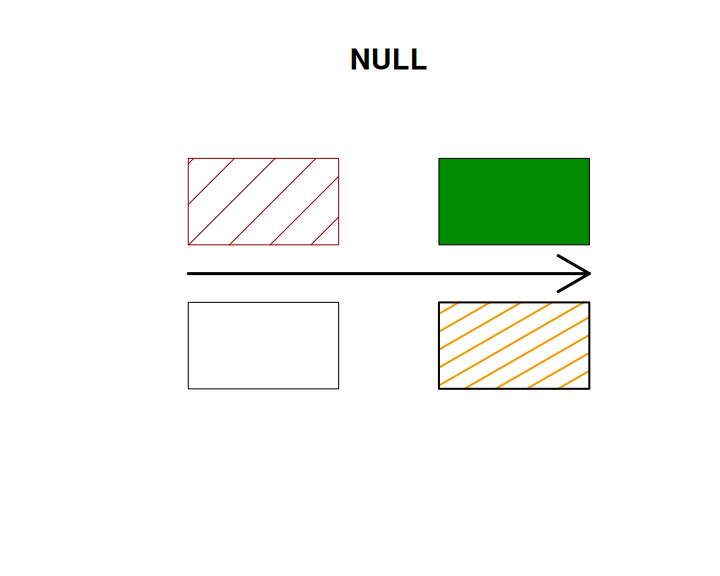
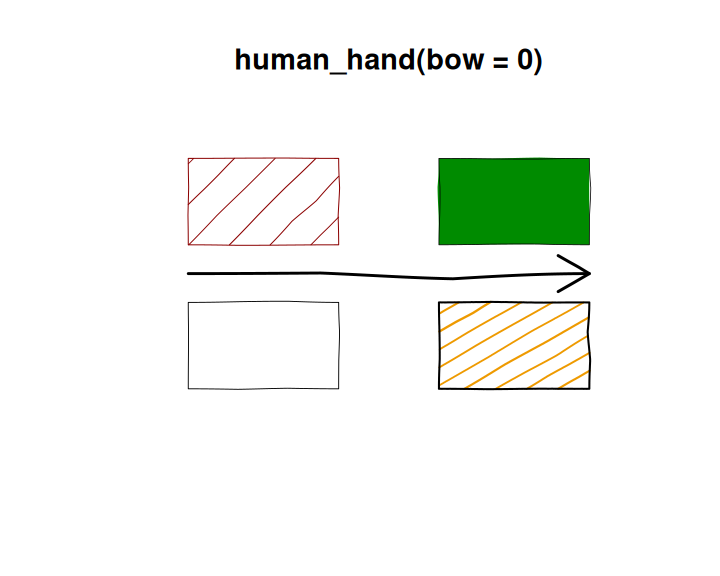
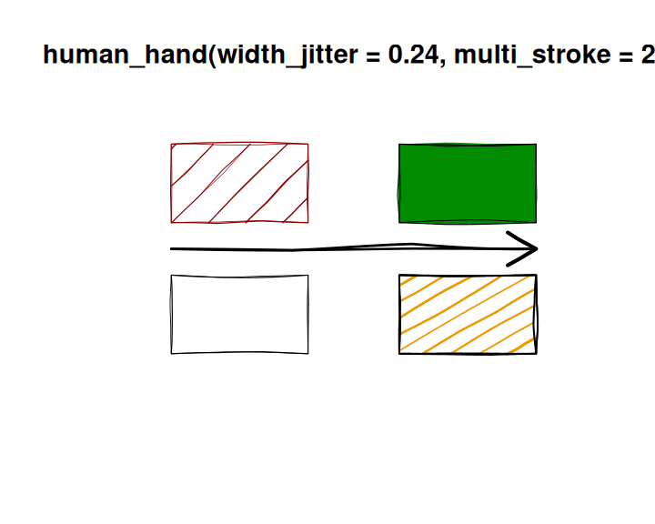
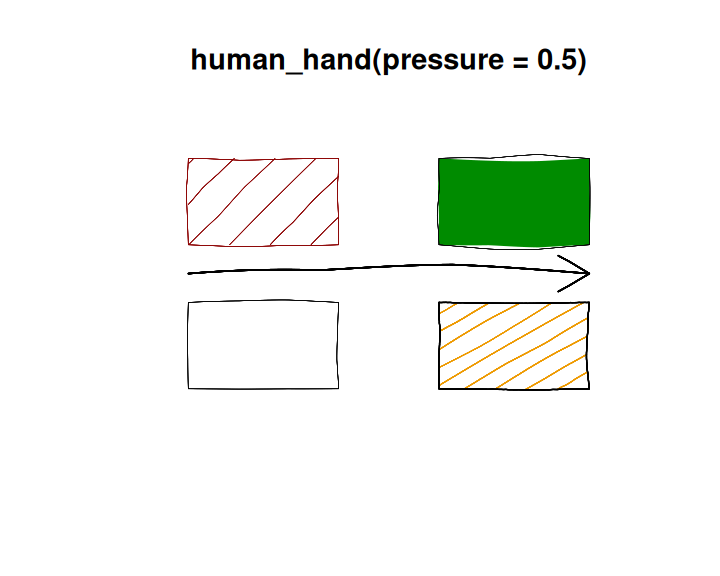

plot_with_hand <- function(...) {
null <- length(list(...)) &&is.null(list(...)[[1]])
title <- deparse(substitute(list(...)))
title <- if (! null) {
sub("list\\((.*)\\)", "human_hand(\\1)", title)
} else {
"NULL"
}
plot.new()
plot.window(c(0, 10), c(0, 10))
title(title)
set_brush(NULL)
if (null)
hand <- NULL
else
hand <- human_hand(seed = 1, ...)
set_hand(hand)
rect(1, 1, 4, 4)
rect(6, 6, 9, 9, col = "green4")
rect(1, 6, 4, 9, col = "darkred", density = 5)
draw_rough_rect(6, 1, 9, 4, lwd = 2,
col = "orange2",
fill_pattern = hatch(),
hand = hand)
arrows(1, 5, 9, 5, lwd = 3)
}
plot_with_hand(NULL)
plot_with_hand()
plot_with_hand(bow = 0)
plot_with_hand(wobble = 0)
plot_with_hand(multi_stroke = 2)
plot_with_hand(width_jitter = 0.24, multi_stroke = 2)
plot_with_hand(endpoint_jitter = 0)
plot_with_hand(endpoint_jitter = 0.02)Pressure on the default device
plot_with_hand(pressure = 0.5)
plot_with_hand(pressure_taper = 1)Pressure using mypaint_device()
set_brush("classic/pen")
plot_with_hand(pressure_taper = 1)